의공기사 (2017-09-23 기출문제)
1과목: 기초의학 및 의공학
1. 다음 그림은 전극의 간격이 변화하는 커패시터 센서를 나타낸 것이다. εr과 ε0의 곱은 0.001C2/Nㆍm2, 두 판의 면적이 각각 1m2, 거리 x가 0.01m일 때의 커패시턴스는? (단, εr:비유전율, ε0:자유공간의 유전율이다.)
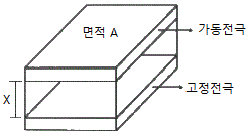
- 0.01[F]
- 0.1[F]
- 1[F]
- 10[F]
(정답률: 71%)

2. 실무율(all or none law)에 대한 설명으로 틀린 것은?
- 신경에 자극을 가할 때 역치 이상일 때는 반응을 일으키고, 역치 이하일 때는 활동전압이 발생되지 않으나 다만 흥분성의 변화만이 있는 것을 실무율이라고 한다.
- 단일 신경섬유가 자극의 강도에 따라 최고의 흥분을 하거나 흥분을 하지 않는 현상을 말한다.
- 조직이나 기관에서는 자극의 세기를 높이면 반응이 작아진다.
- 단일 세포에서 관찰되는 성질이다.
(정답률: 78%)
3. 심전도에서 T파가 기록되는 동안에 심장에서 일어나는 전기적 활동은?
- 심방의 탈분극
- 심방의 재분극
- 심실의 탈분극
- 심실의 재분극
(정답률: 79%)
4. 대장(큰창자)에 대한 설명으로 틀린 것은?
- 수분, 염화물 및 나트륨 흡수
- 맹장, 결장, 직장 등으로 구분
- 분변 형성 및 배변 작용
- 담즙과 췌장액을 조절하는 데 도움을 주는 호르몬 분비
(정답률: 87%)
5. 세포 내 구조인 리소좀(lysosome)의 역할로 옳은 것은?
- 영양소로부터 에너지를 추출
- 독성 물질을 해독하는 등의 세포보호기능
- 여러세포 소기관들과의 상호작용을 통하여 단백질을 합성하는 역할
- 소화효소를 함유하여 노화된 세포소기관이나 부스러기같은 물질들을 분해
(정답률: 85%)
6. 의료용으로 사용되는 표면전극에 대한 설명으로 틀린 것은?
- 안정적으로 접촉을 유지하여야 한다.
- 접촉 임피던스가 높아야 한다.
- 분극전압이 작아야 한다.
- 분극 변화에 대한 안정성이 보장되어야 한다.
(정답률: 82%)
7. 인간의 신경계와 관련하여 대뇌에 포함되지 않는 것은?
- 전두엽(frontal lobe)
- 시상하부(hypothalamus)
- 운동피질(motor cortex)
- 일차시각영역(primary visual cortex)
(정답률: 76%)
8. 다음 중 변위를 측정하는 센서는?
- 열전쌍
- 서미스터
- 선형 가변 차동 변환기
- 표면 플라즈몬 공명 센서
(정답률: 82%)
9. 다음 중 동잡음이 가장 크게 발생하는 전극은?
- 금속판 전극
- 부유 전극
- 가요성 전극
- 이식형 전극
(정답률: 75%)
10. 초음파 영상장치에서 초음파를 혈관내에 투과시켰을 때 혈구세포에 반사되어 돌아오는 초음파의 주파수 변화를 측정하여 혈류의 속도를 측정하는데 이 때 사용되는 이론은?
- 도플러 효과
- 홀 효과
- 광전 효과
- 전계 효과
(정답률: 90%)
11. 혈관 중에서 혈압이 가장 낮은 부위는?
- 대동맥
- 소동맥
- 모세혈관
- 대정맥
(정답률: 65%)
12. 의료용 혈류측정방법으로 사용하기 힘든 기술은?
- 열선과 온도센서를 통한 간접적 방식의 측정
- 레이저 도플러 효과를 이용한 유속분포측정
- 효소공유결합 바이오센서를 이용한 유속측정
- 초음파에서의 도플러 효과를 이용한 유속측정
(정답률: 73%)
13. 인체의 곡면에 접촉성을 높이고, 움직임의 영향을 줄이기 위해, 휘어지기 쉽도록 얇은 판 또는 막 형태로 제작된 전극은?
- 흡착전극
- 미세전극
- 가요성전극
- 감흥전극
(정답률: 78%)
14. 다음 중 길이성장을 담당하는 뼈의 부위는?
- 골단판
- 골막
- 골수
- 해면골
(정답률: 78%)
15. 생체측정 대상에 직접 접촉하지 않는 비접촉식 온도 측정 방법으로 적합한 것은?
- 물체의 열저항 측정
- 물체가 내는 자외선 측정
- 물체가 내는 적외선 측정
- 재배 효과로 인한 전압 측정
(정답률: 87%)
16. 용량성 센서의 특징으로 가장 옳은 것은?
- 집합 반도체로 구성된다.
- 물리적 압력에 따른 전압을 발생한다.
- 변위를 측정할 수 있다.
- 자기에너지 형태로 에너지를 저장한다.
(정답률: 79%)
17. Ag-AgCl(은-염화은) 전극의 특성으로 틀린 것은?
- 전해질을 필요로 한다.
- 대표적인 분극 전극이다.
- 저항성 특성이 나타난다.
- 저주파 신호측정에 적합하다.
(정답률: 86%)
18. 수소 전극을 기준으로 할 때, 반전지(half-cell)전위가 가장 높은 물질은?
- 금(Au)
- 은(Ag)
- 구리(Gu)
- 납(Pb)
(정답률: 69%)
19. 심근세포 간에 발생하는 흥분신호의 전달과 신경에서 나타나는 시냅스(synapse)의 차이로 발생하는 현상으로 틀린 것은?
- 심근세포는 두 세포사이가 가깝고 이온이 직접 통과하는 채널이 존재한다.
- 신경세포는 한 개의 수상돌기(dendrite)로 흥분 신호을 받아서 여러 개의 축삭(axon)을 통해 신호를 전달한다.
- 신경세포간의 시냅스 사이로 이온이 통과하지 못하며 대신 신경전달 물질을 통해 화학적으로 신호가 전달된다.
- 심근세포 간에 신호가 전달되는 과정에서 지연시간이 거의 없으며, 한쪽 방향으로만 신호가 전달되는 것이 아니라, 반대편으로도 신호가 전달될 수 있다.
(정답률: 64%)
20. 광학센서 중에서 광전효과를 사용하여 빛을 감지하며 광전자 방출용 음극(photocathode)과 여러 개의 전자 방출용 전극인 다이노드(dynode), 2차 전자를 수집하는 양극판이 진공관 안에 봉입된 구조로 이루어진 것은?
- CdS셀
- 광전관(phototube)
- 광다이오드(photodiode)
- 광전자 증배관(photomultiplier)
(정답률: 79%)
2과목: 의용전자공학
21. 디지털 회로에서 전가산기(full adder)의 구조는?
- 입력 3개, 출력 2개로 구성
- 입력 3개, 출력 4개로 구성
- 입력 2개, 출력 3개로 구성
- 입력 2개, 출력 4개로 구성
(정답률: 74%)
22. 트랜지스터 증폭회로의 바이어스 방식 중에서 가장 회로가 간단하나 온도와 트랜지스터의 특성에 영향을 많이 받는 것은?
- 베이스 바이어스
- 이미터 바이어스
- 전압분배 바이어스
- 컬렉터 귀환 바이어스
(정답률: 67%)
23. 제어시스템의 설계에 마이크로컨트롤러를 이용함으로써 얻을 수 있는 장점을 모두 선택한 것은?
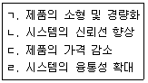
- ㄱ, ㄴ
- ㄱ, ㄴ, ㄷ
- ㄱ, ㄷ, ㄹ
- ㄱ, ㄴ, ㄷ, ㄹ
(정답률: 77%)
24. 두 가지 금속으로 폐회로를 형성하고 전류를 흘리면 접속점에 줄열 이외의 발열 또는 흡열 현상이 일어난다. 이러한 현상을 무엇이라 하는가?
- 제베크 효과
- 펠티에 효과
- 톰슨 효과
- 표피 효과
(정답률: 79%)
25. 다음 그림과 같은 회로에서 AC단자에 ｕ=Vmsinωt[V]을 공급했을 때 AB양단의 전압은 몇 V인가?
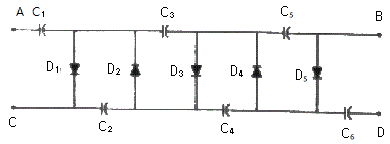
- 3Vm
- 4Vm
- 5Vm
- 6Vm
(정답률: 84%)
26. 생체계측 시 유도 잡음 형태를 설명한 것이 아닌 것은?
- 주변의 교류 전원과 생채 간의 정전결합에 의한 유도 전압
- 주변의 교류 대전류 회로와 생체 간의 전자기결합에 의한 유도 전압
- 차동증폭기를 사용할 때 타동 입력단에 입력되는 동위상의 유도 전압
- 생체와 측정 전극사이의 접촉이나 화학적인 상태의 변화에서 발생하는 유도 전압
(정답률: 63%)
27. 1B=20μA이고, IC=2mA가 흐르는 트랜지스터의 IE와 αDC는 얼마인가?
- IE=1.98mA, αDC=0.985
- IE=1.98mA, αDC=0.99
- IE=2.02mA, αDC=0.985
- IE=2.02mA, αDC=0.99
(정답률: 71%)
28. 호흡기의 평가기능에 해당되지 않는 것은?
- 환기능(ventilation)
- 확산능(diffusion)
- 분포능(distribution)
- 흡수능(absorption)
(정답률: 69%)
29. 다음 논리회로에서 출력 Y의 논리식은?
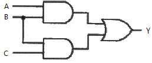
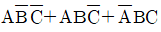
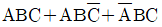
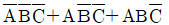
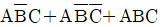
(정답률: 73%)
30. 다음 중 LC 발진기에 대한 설명으로 틀린 것은?
- C급으로 동작한다.
- 저주파 발생회로에 이용한다.
- 효율이 높으나 기생진동이 생기기 쉽다.
- 하틀리 발진기의 귀환요소는 유도성이다.
(정답률: 68%)
31. JFET(Junction Field-Effect Transistor)와 BJT(Bipolar Junction Transistor)로 만든 소신호 증폭기를 비교했을 때의 설명으로 틀린 것은?
- JFFT 증폭기는 전압 증폭도가 낮다.
- JFFT 증폭기는 입력임피던스가 매우 높다.
- JFFT 증폭기는 잡음이 많이 발생하며 전류증폭소자에 적합하다.
- JFFT 증폭기는 BJT 소자로 구성한 증폭기와 회로 구성이 유사하다.
(정답률: 63%)
32. 평활회로를 포함한 반과 정류기의 출력 첨두치는 100V이다. 이 회로에 사용하는 다이오드가 견뎌야 할 최소한의 역전압은 약 몇 V인가?
- 50
- 100
- 150
- 200
(정답률: 65%)
33. 생체계측을 위한 기본구성에서 “물리화학적인 측정량을 전기적 출력으로 변환하는 장치”는 무엇을 나타내는가?
- 측정대상
- 센서
- 증폭기
- 출력장치
(정답률: 81%)
34. 측정된 생체신호의 직류 성분을 제거하기 위하여 사용되는 회로는?
- 미분기
- 적분기
- 비교기
- 가산기
(정답률: 76%)
35. 3분 동안에 720J의 일을 하였다면 소비된 전력은 몇 W인가?
- 2
- 3
- 4
- 5
(정답률: 85%)
36. 마이크로프로세서 시스템에서 입출력 인터페이스에 관한 설명 중 틀린 것은?
- CPU 내에서만 존재한다.
- 데이터 형식상의 차이를 맞춘다.
- CPU와 입출력장치 간의 동작속도를 맞춘다.
- CPU와 입출력장치 사이에 존재하여 데이터의 전송이 원활하게 이루어지도록 하는 역할을 한다.
(정답률: 88%)
37. 다음 과형에서 리플 계수(ripple factor)를 구하는 식으로 옳은 것은?
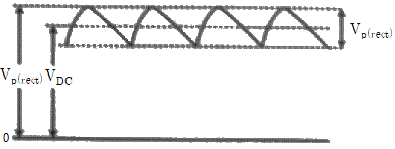
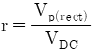
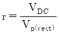
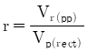
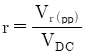
(정답률: 78%)
38. 호흡기의 기능평가를 위해 측정이 필요한 생체변수가 아닌 것은?
- 기체농도
- 폐용적(부피)
- 위전도
- 기체압력
(정답률: 86%)
39. 생체신호의 특성과 관계가 없는 것은?
- 신호의 크기가 매우 작다.
- 사람에 따라 개인차가 크다.
- 주변 환경에 의한 잡음 발생이 쉽다.
- 항상 반복적이고 주기적인 특성을 가진다.
(정답률: 87%)
40. 주어진 신호의 최고 주파수가 4Hz의 경우 표본화 주파수와 표본화 주기로 옳은 것은?
- 2Hz, 0.5sec
- 4Hz, 0.25sec
- 8Hz, 0.125sec
- 16Hz, 0.0625sec
(정답률: 67%)
3과목: 의료안전·법규 및 정보
41. 다음 중 의료기기의 첨부문서에 기재하지 않아도 되는 사항은?
- 사용방법과 사용 시 주의사항
- 제19조(기준규격)에 따라 식품의약품안전처장이 기재하도록 정하는 사항
- 제조번호와 제조년월일
- 보수점검이 필요한 경우 보수점검에 관한 사항
(정답률: 53%)
42. 수술 시 사용하는 전기수술기의 고주파 전류가 환자의 피부와 대극판 사이의 접촉불량으로 인해 생길 수 있는 사고는?
- 감염사고
- 열상사고
- 폭발사고
- 피폭사고
(정답률: 79%)
43. 인체에 전류가 흘렀을 때 인체에서 나타나는 현상으로 틀린 것은?
- 세포내 이온의 이동이 발생
- 피부저항에 의한 저항성 발열이 발생
- 전자기 유도에 의해 강한 자기가 생김
- 근육의 지속적 수축, 호흡근 마비, 미주신경자극에 따른 심장의 억제나 심실세동이 발생
(정답률: 76%)
44. 전자파에 관한 설명으로 틀린 것은?
- 전자파의 세기는 거리에 상관없이 일정하다.
- 전자파는 빛의 속도와 같이 초당 30만km의 속도로 진행한다.
- 전자파는 파장이 짧을수록 에너지는 커지고 더 높은 투과력을 가진다.
- 전자파는 주파수(파장)의 크기에 따라 감마선, 엑스선, 가시광선, 적외선, 초단파, 무선과 등으로 분류되고 있다.
(정답률: 84%)
45. 의료기기를 분류할 때 인체에 미치는 중증도의 잠재적 위성을 가진 의료기기는 몇 등급에 해당하는가?
- 2등급
- 3등급
- 4등급
- 5등급
(정답률: 83%)
46. 의료기기 제조업 허가를 받을 수 없는 자는?
- 파산자로서 복권된 자
- 의료기기법을 위반하여 금고이상의 형을 선고받고 그 집행을 받지 아니하기로 확정된 자
- 의료기기법을 위반하여 제조업허가가 취소된 날부터 1년이 경과한 자
- 금치산자 및 한정치산자
(정답률: 75%)
47. 의료가스의 중앙공급장치에 관한 설명 중 틀린 것은?
- 입자, 일산화질소 등과 같은 불순물을 제거하고, 청결하며 고순도인 압축된 공기를 공급한다.
- 파이프 내의 응결을 방지하기 위해 공기는 높은 이슬점을 가진 습한 상태로 공급되어야 한다.
- 감시시스템을 설치하여 작동조건과 공급조건을 쉽게 파악할 수 있도록 한다.
- 진공펌프는 수밀형 혹은 유밀형으로 하여 고흡입력을 유지시킨다.
(정답률: 83%)
48. 의료기기와 관련하여 부여할 수 있는 인증마크가 아닌 것은?
- GH(Goods of Health) 마크
- ISO(International Organization for Standardization) 마크
- EMI(Electromagnetjc Inteference) 마크
- HACCP(Hazard Analysis Critical Control Point) 마크
(정답률: 79%)
49. 인체에 흐르는 전류와 인체반응 중 전류는 실효치, 주파수 60Hz, 1초간 동전-매크로 쇼크 전류조건에서 3도 화상의 증상이 나타나는 전류 값은 최소 몇 A이상인가?
- 1
- 6
- 15
- 24
(정답률: 67%)
50. 의료기기의 전기ㆍ기계적 안전에 관한 공동기준규격에서 “열적안정”에 대한 설명으로 옳은 것은?
- 물체의 온도가 1분 동안 10℃이상 상승되지 않는 상태
- 물체의 온도가 1시간 동안 10℃이상 상승되지 않는 상태
- 물체의 온도가 1분 동안 2℃이상 상승되지 않는 상태
- 물체의 온도가 1시간 동안 2℃이상 상승되지 않는 상태
(정답률: 70%)
51. 의료폐기물에 관한 설명 중 틀린 것은?
- 의료폐기물은 본인이나 그 동물의 주인이 요구하면 인도하여 처리할 수 있다.
- 의료폐기물은 발생한 때부터 전용용기에 넣어 내용물이 새어 나오지 아니하도록 보관하여야 하며, 의료폐기물의 투입이 끝난 전용용기는 밀폐 포장하여야 한다.
- 의료폐기물의 운반차량은 섭씨 10도 이하의 냉장설비가 설치되어야 한다.
- 의료폐기물의 수집ㆍ운반차량의 차체는 흰색으로 색칠하여야 한다.
(정답률: 62%)
52. X-선 발생장치 중 엑스선관을 포함한 금속체 부분에 해야 할 접지공사는?
- 동전위 접지공사
- 제1종 접지공사
- 제2종 접지공사
- 제3종 접지공사
(정답률: 53%)
53. 서로 다른 보건의료분야 소프트웨어 애플리케이션 간 정보가 호환될 수 있도록 하는 규칙의 집합으로, 1987년 처음 개발되었으며 현재 의료정보의 전자적 교환을 위한 표준프로토콜은?
- DICOM
- KS
- HL7
- ANSI
(정답률: 75%)
54. 시판 중이지 않는 의료기기로 임상시험을 하려는 자는 임상시험계획서를 작성하여 누구에게 승인을 받아야 하는가?
- 식품의약품안전처장
- 시장ㆍ군수ㆍ구청장
- 보건복지부장관
- 관할 보건소장
(정답률: 85%)
55. 레이저 등급에 대한 설명 중 틀린 것은?
- 등급 1M:광학기기로 레이저광을 보거나 조사하면 위험하다.
- 등급 2:눈에 레이저광이 조사될 때 0.25초의 눈깜빡임으로 보호될 수 있다.
- 등급 3R:인체에 레이저광이 직접 조사되면 위험하다.
- 등급 4:인체에 레이저광이 직접 또는 반사되어 조사되면 위험하다.
(정답률: 70%)
56. 의학자료의 코드화에 대한 설명으로 옳은 것은?
- 의학자료를 코드화하면 데이터의 양적 증가가 일어난다.
- 숫자코드를 부여하면 항목의 연상을 쉽게 할 수 있다.
- 의학통계 및 연구가 어려워진다.
- 코드화를 통해 데이터의 접근성이 향상된다.
(정답률: 79%)
57. 의료기기법상 의료기기 취급자에 해당하지 않는 사람은?
- 의료기기 심사업자
- 의료기기 제조업자
- 의료기기 수입업자
- 의료기기 임대업자
(정답률: 78%)
58. 다음 중 국내에서 시행되고 있는 원격의료의 현재 활용분야와 가장 거리가 먼 것은?
- 재택진료
- 원격영상진단
- 원격의료상담
- 원격근거리이동
(정답률: 85%)
59. 다음은 무엇에 관한 설명인가?
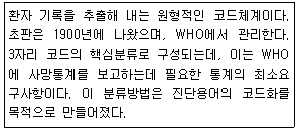
- NeSH(Medical Subject Headings)
- ICPC(International Classification of Primary Care)
- ICD(International Classification of Disease)
- SNOMED
(정답률: 72%)
60. ATC(해부치료 화학적 코드)와 관련이 없는 것은?
- 연상코드를 사용한다.
- 복합제제는 포함될 수 없다.
- 계층적 구조이므로 논리적 그룹화를 할 수 있다.
- 약제이용 연구에 관한 국제적인 WHO표준이다.
(정답률: 57%)
4과목: 의료기기
61. X-선을 감지하는 장치에 관한 설명으로 적절하지 않은 것은?
- 종류로는 X-선 증감지, 영상증배관, 고체평판디텍터가 있다.
- X-선 증감지는 CdEO4와 Gd등의 희토류 합성물을 형광물질로 이용한다.
- 영상증배관에는 섬광체와 접착된 광도전체에서 광전자를 발생시킨다.
- 증감지의 형광물질이 두꺼울수록 고휘도, 고해상도 영상을 얻을 수 있다.
(정답률: 79%)
62. 전정기능 진단기(ENG)에 사용되는 정현적 회전자극 함수에 관한 설명 중 옳은 것은?
- 회전자극 함수가 sinωt일 때 가속도 함수는 cosωt가 된다.
- 회전자극 함수가 sinωt일 때 가속도 함수는 tanωt가 된다.
- 회전자극 함수가 cosωt일 때 가속도 함수는 tanωt가 된다.
- 회전자극 함수가 cosωt일 때 가속도 함수는 cosωt가 된다.
(정답률: 75%)
63. PET에서 사용하는 방사성 동위원소가 붕괴할 때 발생하는 감마선 광자의 에너지 크기는?
- 311keV
- 411keV
- 511keV
- 611keV
(정답률: 79%)
64. 혈액투석에 대한 설명으로 틀린 것은?
- 혈관통로를 위해 정맥에 카테터를 삽입한 것을 동적맥류라 한다.
- 혈액투석의 합병증으로 저혈압, 근경련, 투석불균형 증후군 등이 있다.
- 혈액투석에서 용질의 제거는 확산과 대류에 의해 이루어지고 체액 제거는 초여과에 의해 이루어진다.
- 혈액과 상호작용하여 노폐물과 과잉 수분을 제거하면서 필요한 전해질은 보충, 유지 시켜줄 수 있도록 조성된 투석액이 필요하며, 농도는 혈장액과 비슷하다.
(정답률: 75%)
65. X-선관에서 발생되는 X-선의 성질에 대한 설명으로 옳은 것은?
- 주파수는 파장과 아무런 관계가 없다.
- 진동수가 높으면 에너지가 크다.
- 파장이 짧을수록 더 낮은 전압이 필요하다.
- 에너지는 플랑크 상수에 반비례한다.
(정답률: 77%)
66. 임시형 페이스메이커에 대한 설명으로 틀린 것은?
- 체외에서 임시로 장착하는 페이스메이커이다.
- 전원부에서는 약 9V정도의 전압을 발생시킨다.
- 부정맥이 심하지 않아 회복가능성이 있는 환자에게 사용된다.
- 페이스메이커를 체내에 이식한 후 주기적으로 점검을 받아야 한다.
(정답률: 75%)
67. MRI에 관한 설명으로 옳은 것은?
- Larmor주파수는 자장의 세기에 반비례하고 RF주파수에 비례한다.
- 정자기장의 비균질성을 부분적으로 수정하기 위해 shim코일을 사용한다.
- 고자기장 발생을 위해 초전도자석을 이용하며 정기적으로 Quenching할 필요가 있다.
- 음영도의 결정요소로 수소원자의 자기 회전비, 수소원자핵의 밀도, 수소원자핵의 이완시간 등이 있다.
(정답률: 56%)
68. 초음파로 촬영하고자 하는 인체 부위의 음향임피던스는 1.5Rayl이고 초음파 트랜스듀서의 음향임피던스는 24Rayl이다. 초음파 트랜스듀서 표면에 임피던스 정합층을 만들 경우 이 정합층의 임피던스는 얼마로 해야 하는가?
- 3Rayl
- 6Rayl
- 9Rayl
- 36Rayl
(정답률: 59%)
69. 시준기(collimator)가 장착된 시준헬멧을 통과하여 환자의 뇌병변에 집중적으로 조사하여 뇌를 절개하지 않고도 병변을 제거할 수 있는 장치는?
- 선형가속장치
- 미세 피펫
- 감마나이프
- 이온도입치료기
(정답률: 79%)
70. 전기수술기(Electro-Surgical Unit, ESU)에 사용되는 전류에 관한 설명으로 틀린 것은?
- 과다한 전류를 흘릴 경우 열작용에 의해 화상, 통증, 심장발작 등이 발생할 수 있다.
- 고주파 교류전류는 전극끝을 통해 생체내로 흘려보내면 이 전류는 대극판으로 다시 흘러나와 본체로 환류된다.
- 전류가 흘러나가는 대극판은 항상 좁은 범위로 최대한 잘 붙여 전류가 원활하게 흘러나갈 수 있도록 잘 붙여 놓아야 한다.
- 생체조직은 그 형태에 따라 전도율이 다를 수 있으며, 따라서 전류의 세기도 달라야 한다.
(정답률: 80%)
71. 다음 중 가장 정확하게 체성분을 측정하는 방법은?
- 수중 체밀도법
- 피하지방 두께 측정법
- 근적외선 측정법
- 생체전기 임피던스 분석법
(정답률: 64%)
72. 건강한 정상인을 피검자로 하여 안정된 상태에서 뇌파를 관찰하던 중 피검자가 눈을 감고 안정적으로 있는 동안 진폭이 큰 저주파로 보이던 파형이 눈을 뜨자 진폭이 작은 고주파파형으로 바뀌었다. 눈을 감고 있을 때 진폭이 큰 저주파 파형에 해당하는 뇌파는?
- θ(theta)파
- δ(delta)파
- β(beta)파
- α(alpha)파
(정답률: 59%)
73. 방사선의 세기 조절 방사선 치료(IMRT)기술을 적용한 방사선 치료기기로서 입체조형방사선치료(CRT), 영상유도방사선치료 등이 가능한 장치는?
- 표재(X-선)치료장치(surface X-ray apparatus)
- 심부치료장치(deep therapy ststem)
- 선형가속기 LINAC(linac accelerator)
- 베타트론(betatron)
(정답률: 76%)
74. 침을 사용하지 않도 침치료와 똑같은 효과를 기대할 수 있는 전기치료법은?
- ICT
- EST
- SSP
- FES
(정답률: 61%)
75. 초음파를 이용한 뇌혈류 진단기에 관한 설명으로 틀린 것은?
- 펄스파 방식-펄스형태의 초음파를 발신시간과 수신시간의 비율을 50%로 동일하게 한다.
- 이중 도플러 방식-펄스와 휘도방식이 결합된 형태이다.
- 컬러 도플러 방식-혈류속도를 휘도와 색깔로 표현하는 방식이다.
- 강화 도플러 방식-혈관의 구조를 도플러 신호의 강도로서 표현하는 방식이다.
(정답률: 60%)
76. X-선 단층촬영장치(CT)에 관한 설명 중 틀린 것은?
- 고정된 X-선 발생장치로부터 나와 영상을 얻고자 하는 대상 물체를 투과한 X-선을 반대편의 도정된 X-선 검출기로 영상신호를 획득한다.
- X-선 CT영상은 컴퓨터를 이용하여 projection reconstruction 알고리즘과 같은 분석적(analytic) 방법 또는 반복적(iterative)방법으로 재구성된다.
- X-선 CT영상은 MRI영상에 비해 연부조직(soft tissue)의 대조도(contrast)가 뛰어나지 않다.
- 환자 조직의 X-선에 대한 감쇄계수를 정규화하여 나타내는 단위로 Hounsfield) 단위를 사용한다.
(정답률: 66%)
77. 방사선 치료기기의 하나인 선형가속기의 가속장치구성으로 틀린 것은?
- 전자총
- 가속관
- 도파관
- 이온펌프
(정답률: 53%)
78. 재택진단기의 구성에서 디지털 청진기 특성을 가장 잘 설명한 것은?
- 모든 가청주파수 대역을 증폭해야 한다.
- 낮은 주파수만을 통과시키는 HPF(High Pass Filter)가 필요하다.
- 높은 주파수만을 통과시키는 LPF(Low Pass Filter)가 필요하다.
- 특정 주파수만을 통과시키는 BPF(Band Pass Filter)가 필요하다.
(정답률: 82%)
79. 전통적 혈액투석의 독소제거의 주된 메커니즘은?
- 증발
- 초여과
- 흡착
- 확산
(정답률: 59%)
80. 심박출량을 측정하는 지시약 희석법 중에서 색소 희석법으로 혈류량 등을 양적으로 측정하는 방법에 사용되는 지시약은?
- 인도사이나닌 그린
- 페놀프탈레인
- BTB 용액
- 메틸
(정답률: 65%)
5과목: 의용기계공학
81. 외전(alduction)에 대한 설명으로 옳은 것은?
- 두 분절 사이의 각도가 감소하는 운동이다.
- 인체의 중심으로부터 서로 멀어지는 운동이다.
- 정중면(median plane)으로 가까이 하는 운동이다.
- 시상면(sagittal plane)에서 관찰된다.
(정답률: 84%)
82. 다음 중 재료가 받을 수 있는 응력(stress)의 종류로 틀린 것은?
- 압축
- 전단
- 추출
- 인장
(정답률: 74%)
83. 수술용 흡수성 봉합사로 사용되는 의료용 구분자재료는?
- PGA
- Teflon
- PP
- Siloicon
(정답률: 71%)
84. 운동량과 충격량에 대한 설명으로 틀린 것은?
- 운동량은 운동의 효과를 나타내는 물리량이며, 질량과 속도의 곱으로 나타낸다.
- 운동량의 변화를 충격량이라하며, 충돌 시 받음 힘과 충돌시간의 곱으로 나타낸다.
- 외부에서 힘이 작용하지 않는 한 물체의 운동량은 변하지 않는다.
- 운동량 보존은 두 물체사이에서는 적용되지만 한 물체에서는 적용되지 않는다.
(정답률: 81%)
85. 연골(cartilage)의 대한 설명으로 틀린 것은?
- 교원질 섬유가 풍부하다.
- 활면(bearing surface)을 제공한다.
- 젤 형태의 다당류와 단백질을 포함한다.
- 재생능력이 매우 우수하다.
(정답률: 82%)
86. 분해성 생체 고분자재료가 아닌 것은?
- 콜라겐
- 알긴산
- 폴리아미노산
- 폴리우레탄
(정답률: 72%)
87. 생체 내에서 축적된 자성 미분체에 의해 발생하는 자장을 검출하여 생체정보를 얻는 계측이 아닌 것은?
- 폐자도
- 심자도
- 뇌자도
- 골전도
(정답률: 82%)
88. 경조직과 그 역할을 짝지은 것으로 틀린 것은?
- 치조골:내부장기를 보호한다.
- 치조골:하중을 전달한다.
- 망상골:칼슘이온의 저장고이다.
- 망상골:인체의 형태유지 역할을 한다.
(정답률: 57%)
89. 방사선 단위 중 방사선이 어느 정도 흡수되었는가를 알고자 할 때 사용하는 것은?
- C/kg
- R(Roentgen)
- Gy(Gray)
- Sv(Sivert)
(정답률: 80%)
90. 의용금속재료가 가지는 공통적 특징이 아닌 것은?
- 높은 밀도
- 우수한 전기 및 열전도도
- 높은 강도
- 어려운 가공변형
(정답률: 71%)
91. 힘의 전달용으로 사용하는 나사로 옳은 것은?
- 3각 나사
- 4각 나사
- 미터 나사
- 마름모꼴 나사
(정답률: 77%)
92. 다음 ()에 들어갈 용어를 옳게 나열한 것은?
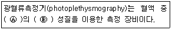
- Ⓐ 적혈구, Ⓑ 화학적
- Ⓐ 적혈구, Ⓑ 기계적
- Ⓐ 헤모글로빈, Ⓑ 광학적
- Ⓐ 헤모글로빈, Ⓑ 전기적
(정답률: 81%)
93. 정형 외과적으로 골절이 발생될 경우 가장 간단히 고정하는 방법으로 316L 스테인리스 스틸로 제조된 커시너 와이어(Kirshner wire)를 사용하여 고정한다. 직경이 0.8mm인 이 와이어를 부러진 뼈를 고정하기 위하여 반경이 40mm 크기의 활 모양으로 구부렸을 때 와이어 표면에 걸리는 최대 굽힘 응력(Maximum bending stress)은 몇 GPa인가? (단, 표면에 걸리는 굽힘응력은
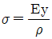
, y는 중립면으로부터의 높이, p는 굴곡, 스테인리스 스틸의 탄성계수는 200GPa이다.)- 0.5
- 1
- 2
- 4
(정답률: 41%)

94. 생체 흡수성 세라믹스인 TCP(tricalciumphosphate)의 특징을 잘못 설명한 것은?
- 인체 내에서 용해되어 흡수되는 속도를 조절할 수 있다.
- 분해속도가 매우 빨라서 용해도가 매우 높은 나트륨과 흔한 사용함으로씨 흡수속도 조절이 가능해진다.
- 복합재료의 충진재로 사용하여 오랜 기간에 걸쳐 뼈가 안정적으로 채워지게 되는 공간으로 변형되기도 한다.
- 장기적인 부작용의 가능성이 없다는 장점이 있다.
(정답률: 72%)
95. 의료용 스테인리스강(stainIess steeI)의 특징으로 틀린 것은?
- 지속적으로 체액과 접촉해도 부식이 전혀 발생하지 않는다.
- 바나듐강보다 기계적인 강도가 강하고 부식에도 강하다.
- 이식물로 최초로 사용된 스테인리스강은 Cr-Ni(18%:8%) (18-8, 또는 현대 분류방법은 302형)이다.
- 361L은 316스테인리스강의 내식성을 보강하기 위해 단소함유랑을 0,03wt%로 감소시켜 저탄소를 의미하는 스테인리스강이다.
(정답률: 72%)
96. 재료의 인장시험에서 원래의 길이는 12cm였고, 인장력을 가한 후 변위된 길이는 12.12cm였을 경우 변형률은?
- 0.01
- 0,06
- 0,12
- 1.24
(정답률: 78%)
97. 전기쇼크에 대한 설명으로 틀린 것은?
- 전자제품을 만졌을 때 짜릿하다고 느낄 정도의 최소한의 절류를 최소감지진류라 한다.
- 전기쇼크로 인하여 자력으로 손을 뗄 수 없게 되는 한계를 이달전류라 한다.
- 전류가 피부를 통하여 체내에 흘러들어가고 다시 체외에 나올 때 발생하는 전기쇼크를 매크로쇼크라고 한다.
- 마이크로쇼크란 인체에 1A이상릐 전류에 의한 감전을 말한다.
(정답률: 80%)
98. 생체재료의 표면득성 분석법 중 재료의 화학적 결합을 분석하는 시험법은?
- 주사전자현미경 관찰법
- 적외선 스펙트럼 분석법
- 접촉각 분석법
- 원자력 현미경 관찰법
(정답률: 66%)
99. 다음 중 자기장에 관한 설명 중 틀린 것은?
- 자석이나 전류, 변화하는 전기장 등의 주위에 자기력이 작용하는 공간이다.
- 적류전류, 고류전류, 맥동전류로 세분화활 수 있다.
- 자기장은 크기와 뱡향을 지닌 백터량이다.
- 운동황는 전하는 자기방을 발생시킬 수 있다.
(정답률: 72%)
100. 생체적합성을 평가하는 방법은 시험하는 조건에 따라서 구별될 수 있으며 세포나 조직을 이용하여 생체적합성을 평가하고자 할 경우 시행되는 시험조건은 무엇인가?
- 시험관적 시험(In vitro test)
- 생체내 시험(In vivo test)
- 동물 시험(Animal test)
- 임상 시험(Clinical test)
(정답률: 75%)